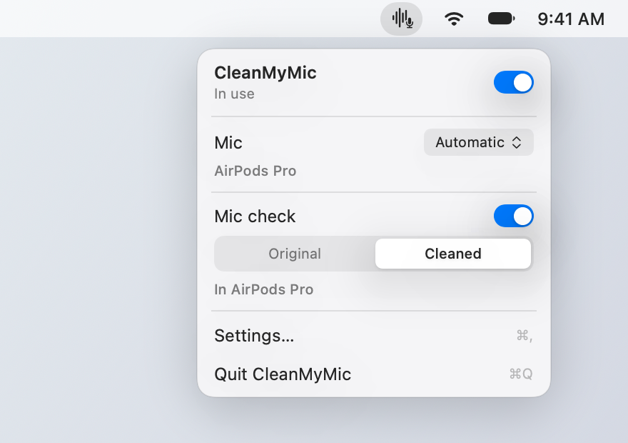

A small open-source macOS menu bar app that removes background noise, room echo and nearby voices in Zoom, Meet, Teams and OBS - offline, free, no account.

Press Play, then click between tracks (or hit keys 1–3) to switch at the exact same word. Every track is time-aligned and loudness-matched to -20 dBFS, processed through the real macOS Core ML engine.
Honest side-by-side against what people usually reach for today.
| Tool | Price | Offline / no account | Works in every app | Nearby voices | Studio polish | Platform |
|---|---|---|---|---|---|---|
| CleanMyMic | Free (open source) | Yes | Yes (virtual mic) | Yes | Built-in (0 ms) | macOS Apple Silicon |
| Apple Voice Isolation | Free (built-in) | Yes | Per-app support | Partial | No | macOS |
| Krisp | $8-12/mo | Account required | Yes | Yes | Paid tiers | macOS / Windows |
| DeepFilterNet3 | Free (open source) | Yes | CLI / plugin | Limited | No | Cross-platform |
| NVIDIA Broadcast | Free (RTX GPU) | Yes | Yes | Yes | Yes | Windows only |
| Krisp Voice Isolation Benchmark (40 real calls each) | Raw mic | CleanMyMic Studio | Krisp VI 2.5 HD | DeepFilterNet3 |
|---|---|---|---|---|
| Work calls - Word Error Rate (lower is better) | 26.1% | 10.8% | 10.3% | 20.6% |
| Call center - Word Error Rate (lower is better) | 20.3% | 13.0% | 14.8% | 19.8% |
| Phone calls - Word Error Rate (lower is better) | 3.7% | 5.1% | 4.3% | 6.3% |
| Work calls - Background voice removed (higher is better) | - | 43.8 dB | 30.9 dB | 14.8 dB |
| Call center - Background voice removed (higher is better) | - | 45.7 dB | 29.4 dB | 18.6 dB |
Measured on an M5 Pro (macOS 27.2). Pure native Swift + Accelerate/vDSP + Core ML - 2,055 lines of Swift, no Electron, no background helper when idle.